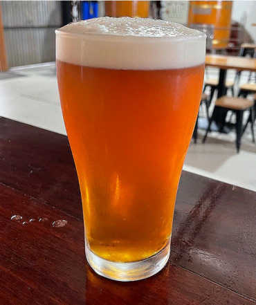

American Pale Ale

American Pale Ale is an American variation of the classic British Pale Ale. American Pale Ales are similar in color and body to their British counterparts, but have the characteristic pine or citrus flavor derived from American hops and a more dominant hops flavor.
Medium body, less caramel than English Pale. Medium to high hop rate with corresponding aroma. Pale golden to deep amber in color. May have some fruity esters. No diacetyl. Moderate to high carbonation. Lighter in color than English Pale Ale, and distinguished by the use of American hops, which have higher bitterness and aroma than English counterparts.
Ingredients (15l batch):
- Grain Malts
- 2kg Pale Ale
- 300gr Viena
- 100gr Crystal 100
- 150gr Carapils
- Hops
- 15gr Cascade(60' boiling)
- 15gr Cascade(during Whirpool)
- Yeast
Step by step
- Mill the grains and dough-in targeting a mash of around 3l of water to 1 kg of grain (a liquor-to-grist ratio of about 3:1 by weight) and a temperature of 67 °C. Hold this mash temp at least for 60min o more (I usually leave it for 90min to make sure the enzymatic conversion is complete.
- Recirculating the mash and heat it until the temp. raises to 76 °C in order to get the mash. Sparge slowly with 77 °C water, collecting wort until the pre-boil kettle volume is around 18l or the wort gets the gravity of 1.030 (9.5 °P).
- The total wort boil time is 60 minutes. Add the bittering hops. Add Irish moss or other kettle finings with 15 minutes left in the boil.
- After finished the boil add the rest of the hops, making sure of first do a good whirpool, while chilling the wort to 67 °F (19 °C).
- Puor the worth into the fermenter, add the entire package of yeast and aerate thoroughly. Ferment in a rage of temp between 19 °C and 22°C, until the yeast drops clear. At this temperature and with healthy yeast, fermentation should be complete in about one week or less. Allow the lees to settle and the brew to mature without pressure for another two days after fermentation appears finished.
- Rack to a keg and force carbonate or rack to a bottling bucket, add priming sugar, and bottle. Target a carbonation level of 2.5 volumes.
References
Return to main page